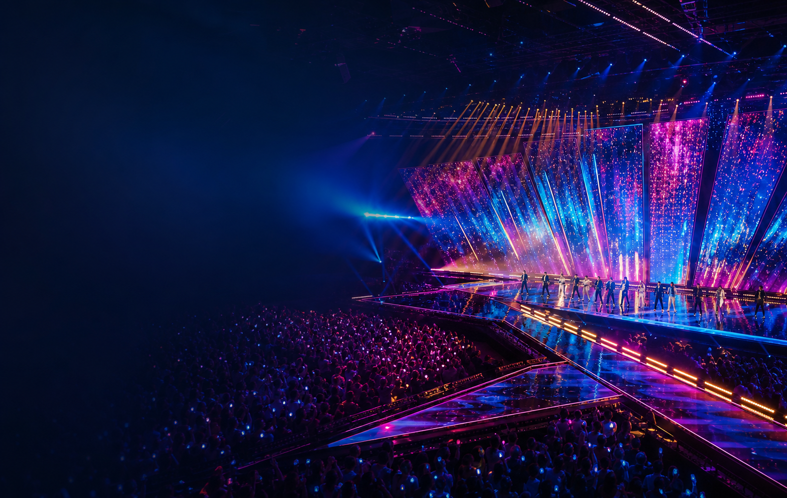
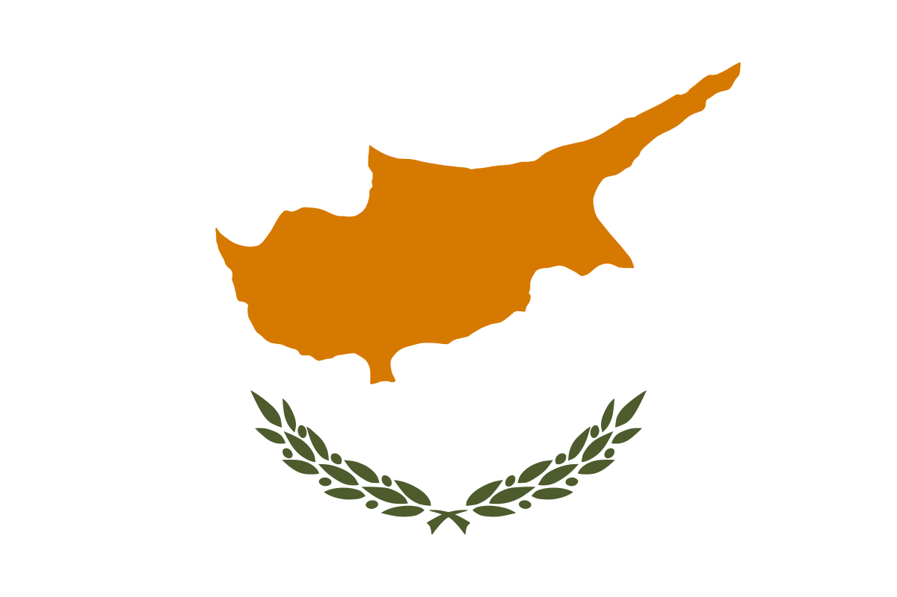
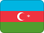

Finalman haykun
| # | Llaqta | Takiy | Imayna |
|---|---|---|---|
| 1 | Bulgaria | DARA - Bangaranga | Sipasqa |
| 2 | Romania | Alexandra Căpitănescu - Choke Me | Sipasqa |
| 3 | Czechia | Daniel Zizka - CROSSROADS | Sipasqa |
| 4 |  Cyprus | Antigoni - JALLA | Sipasqa |
| 5 | Denmark | Søren Torpegaard Lund - Før Vi Går Hjem | Sipasqa |
| 6 | Delta Goodrem - Eclipse | Sipasqa | |
| 7 | Ukraine | LELÉKA - Ridnym | Sipasqa |
| 8 | Albania | Alis - Nân | Sipasqa |
| 9 | Malta | AIDAN - Bella | Sipasqa |
| 10 | Norway | JONAS LOVV - YA YA YA | Sipasqa |
Atipanakuymanta lluqsisqa
| # | Llaqta | Takiy | Imayna |
|---|---|---|---|
| 1 |  Azerbaijan | JIVA - Just Go | Lluqsisqa |
| 2 | Luxembourg | Eva Marija - Mother Nature | Lluqsisqa |
| 3 | Armenia | SIMÓN - Paloma Rumba | Lluqsisqa |
| 4 | Switzerland | Veronica Fusaro - Alice | Lluqsisqa |
| 5 | Latvia | Atvara - Ēnā | Lluqsisqa |
Kay showpi ñawpaqta sipasqa
Kay llaqtakunaqa Hatun finalpiña karqanku; France hinaspa United Kingdom kay semi-finalman votopaq tinkisqa, Austriaqa chaskiq llaqta hinaña sipasqa.
| # | Llaqta | Imarayku | Imayna |
|---|---|---|---|
| 1 | Chiqap sipasqa; rikhurirqan hinaspa votarqan | Finalpiña | |
| 2 | United Kingdom | Chiqap sipasqa; rikhurirqan hinaspa votarqan | Finalpiña |
| 3 | Chaskiq llaqta; finalpiña | Finalpiña |
Pukyu: Eurovision.comMusuqchasqa 13 mayo 2026